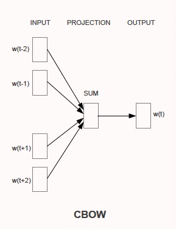
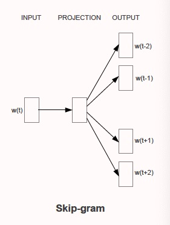

Efficient Estimation of Word Representations in Vector Space
Novel model architectures for computing continuous vector representations of words from very large data sets.
Background
- Many current NLP systems treat words as atomic units, without notion of similarity.
- We want to preserve the linear regularities among words, vector("King") - vector("Man") + vector("Woman") = vector("Queen").
Previous Work
O is training complexity, E is #training epochs, T is #words in training set, Q is model-specific.
NNLM(feedforward neural network language model)
As described in "A Neural Probabilistic Language Model", N previous words are encoded, projected and concatenated together in the project layer.

The dominating term is because last term can be reduce to with binary tree representations of vocabulary.
New Log-linear Models
CBOW
Surrounding words are projected into the same position and averaged, so the order of words does not influence the projection.

Skip-gram
Use current word to predict words within a certain range before and after the current word. Increasing the range improves the quality of resulting word vectors.
